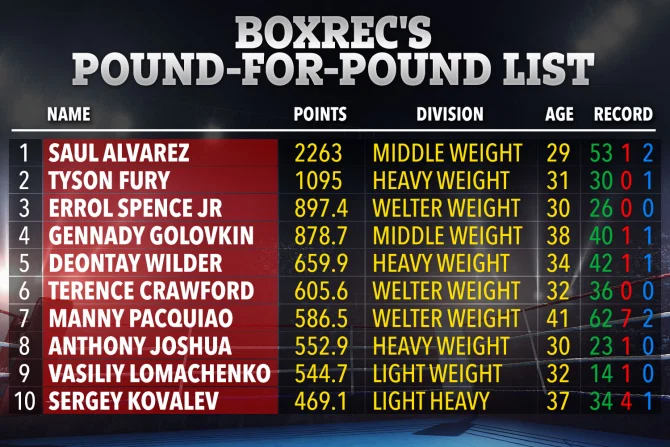

DNBC NEWS
DNBC NEWS
DNBC NEWS
P4P LIST Tyson Fury is second best boxer on planet according to stats but Anthony Joshua and Lomachenko just scrape into top 10
Jake Lambourne 16 Jun 2020, 15:05Updated: 16 Jun 2020, 15:57
TWO British stars have been included in Boxrec's top ten pound-for-pound list - though Tyson Fury did his best to hide Anthony Joshua from the rankings.
The Gypsy King - who has recently been named by Ring magazine as the world's best active heavyweight - has come in at second in the P4P list, with AJ placed in at eighth.

Fury uploaded a cropped image of the rankings and shared it to his 1.5 million Twitter followers, however he only showed the top seven as he taunted his rival.
Here SunSport runs you down Boxrec's full pound-for-pound list.
1. Saul Alvarez - Middleweight - 53-1-2
The Mexican star has picked up world titles in four different divisions - most recently stepping up to light-heavyweight where he blasted away Sergey Kovalev in the 11th round.
His sole defeat came at the hands of Floyd Mayweather in 2013 when he was just 23.
Since that loss, he has racked up wins against the likes of Gennady Golovkin, Amir Khan, Miguel Cotto, Daniel Jacobs and Liverpudlian duo Liam Smith and Rocky Fielding.
2. Tyson Fury - Heavyweight - 30-0-1
Fury will surely go down as one of the best British fighters of all time should he beat Deontay Wilder in their trilogy bout.
And should he emerge victorious in his two encounters against Joshua, there can be no arguing that he will go down as one of top heavyweights ever to grace the ring.
3. Errol Spence Jr - Welterweight - 26-0
The IBF and WBC champion has looked impregnable in his 26 outings in the paid ranks, with 21 of his victories coming by way of knockout.
A future Hall of Famer, the 30-year-old American already boasts wins against the likes of Kell Brook, Shawn Porter, Mikey Garcia and Lamont Peterson.
Danny Garcia could be the man tasked with inflicting a first defeat on The Truth once boxing returns following the coronavirus crisis.
4. Gennady Golovkin - Middleweight - 40-1-1
Despite losing his undefeated record at the hands of Canelo, the 38-year-old remains a force to be reckoned, and he is once again a world champion having picked up the IBF strap in his recent bout against Sergiy Derevyanchenko.
There has even been speculation that he could have Manny Pacquiao in a blockbuster bout after the Filipino's trainer Freddie Roach talked up a possible encounter between the two.
5. Deontay Wilder - Heavyweight - 42-1-1
The Bronze Bomber has hinted he could hang up his gloves should he lose against Fury after he was exposed by his rival during their Las Vegas bout.
He was recently labelled as "trash" by Floyd Mayweather Sr as he gave a brutal assessment on the 2008 Olympic bronze medallist.
6. Terence Crawford - Welterweight - 36-0
Surprisingly far down the list, the three-weight world champion has won his last seven fights with his opponents failing to go the distance.
The former undisputed light-welterweight champion has Spence Jr in his sights as he once again looks to hold all four major belts.
7. Manny Pacquiao - Welterweight - 62-7-2
An eight-weight world champion, Pacquiao will go down as one of the finest fighters who has ever lived having won titles across four separate decades.
But the 41-year-old's time in the sport appears to soon be coming to an end after his promoter Bob Arum announced he is set to run to be president in the Philippines in 2022.
8. Anthony Joshua - Heavyweight - 23-1
The WBA, WBO and IBF champion has been vocal in his quest to become the first undisputed heavyweight champion since Lennox Lewis in 1999.
But before he faces either Fury or Wilder, he must first get past his IBF mandatory Kubrat Pulev.
Their meeting could take place in England in September, with the 02 Arena and the Royal Albert Hall two possible options.
9. Vasiliy Lomachenko - Lightweight - 14-1
The two-time Olympic gold medallist suffered a shock points defeat in just his second outing as he challenged Orlando Salido for the WBO featherweight title.
But since then he has world titles in three divisions, beating the likes of Jorge Linares, Gary Russell Jr, Guillermo Rigondeaux and British duo Luke Campbell and Anthony Crolla.
Arguably the most skilled active fighter, the Ukrainian is expected to face Teofimo Lopez later this year.
10. Sergey Kovalev - Light-heavyweight - 34-4-1
It remains to be seen what the future holds for the 37-year-old Russian after he was humbled by Canelo in his last outing.
A fight against Cuba's Sullivan Barrera could take place in the future with the Krusher to potentially fight for the WBO title should Alvarez vacate.